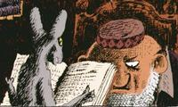

L'histoire
Le chat du rabbin raconte l'histoire d'un félin doué de parole dans l'Alger du début du XXe siècle. Il peut en effet parler après avoir dévoré le perroquet de la maison.
Le rabbin lui interdit alors de voir sa fille Zlabya car le chat ne dit que des mensonges ou des vérités blessantes. Afin de revoir sa maîtresse, le chat du rabbin demande donc tout naturellement à faire sa Bar-Mtsvah.
Au fil des albums, le chat du rabbin perdra et retrouvera la parole. À certains moments, il pourra communiquer uniquement avec les autres animaux ou certaines personnes, tel le peintre russe.
Il est le narrateur de l'histoire et à travers lui, on découvre la culture juive d'Algérie. Il ne manquera pas d'observer avec un regard critique les errements et défauts des humains qui l'entourent. Il voyagera à Paris afin de rencontrer les parents de Jules, l'époux de Zlabya, ou à travers toute l'Afrique pour trouver Jérusalem d'Afrique.
Cette série est une magnifique fable qui nous fait découvrir la culture juive séfarade.